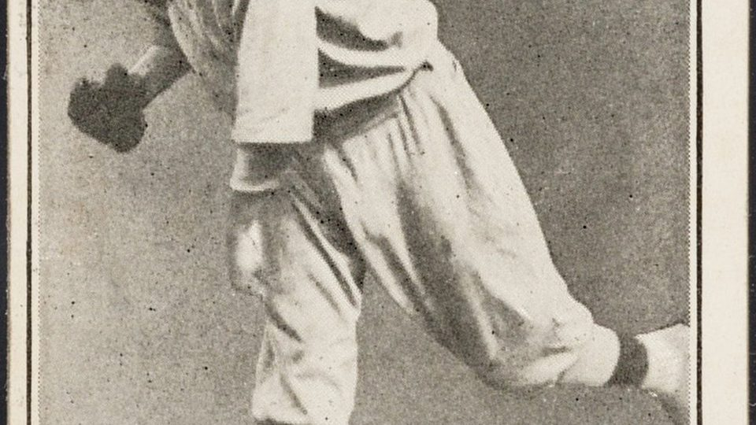

Sports trading cards
Modern and vintage. Filter by sport, year, and graded vs raw.
Browse sports cards
Baseball cards
Rookies, inserts, vintage. Ask for front and back photos on raw cards.
Search baseball
Pokémon cards
Singles and sealed. Look at the holo and edges; fakes are mushy.
Search Pokémon